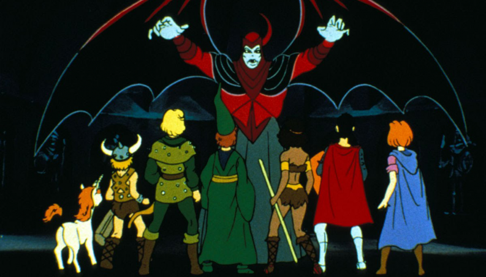

Role-playing game, também conhecido como RPG, pode ser traduzida como “Jogo de Interpretação de Papéis” ou “Jogo de Interpretação de Personagens”. É um tipo de jogo em que as pessoas se reúnem e interpretam determinados tipos de personagens dos mais variados tipos, desde Cavaleiros até mesmo Anões Robôs.
Todo RPG tem um mestre, que como o próprio nome diz, mestra uma história que ele cria como se fosse um "diretor", e os outros jogadores atuam como os personagens que os mesmos criaram.
O mestre cria uma história com vários desafios para serem superados pelos jogadores, a história em si pode ser qualquer de qualquer tipo, Aventura, Escola de Magos, Vampiros, Futurista, Idade Medieval.
Todo jogo tem regras e no RPG geralmente elas vêm escritas em livros que contém instruções e ideias para a criação de campanhas, personagens e antagonistas. Cada jogador tem uma ficha, onde é anotado todas as características do personagem e todos os atributos que ele possui, Exemplo: "Força: 10", "Velocidade: 7".
O jogo é baseado nas escolhas de cada jogador/personagem, pois a cada escolha o mundo da campanha é afetado podendo o jogo durar um determinado tempo ou até mesmo pra sempre dependendo do Mestre.
Oprimeiro sistema de rpg foi concebido inicialmente por Dave Arneson que procurava criar um jogo de tabuleiro que fornecese maior liberdade e fantasia para jogadores do que os populares jogos de guerra da época, como Kriegspiel e Gettysburg.
Há uma especulação que a ideia surgiu quando o criador, Dave Arneson, resolveu fazer uma brincadeira com seus amigos ao inserir um Druída em meio a uma sessão de um jogo que retratava as guerras napoleônicas. O mesmo decidiu investir na proposta. Assim nasceu o primeiro role-playing-gaming de fantasia conhecido como "Masmorras do Castelo de Blackmoor".

Gary teve inspirações e ideias parecidas e assim com a ajuda de seus filhos e amigos para testar suas ideias, o mesmo criou o chamado "Fantasy Game" que já apresentava idéias que são padrões do rpg atual como o controle e progressão de um personagem único por jogador e um estilo de livre narrativa. Gygax até tentou vender sua ideia para as empresas populares daquele tempo, porém sua ideia foi mal vista e recusada pelas corporações que viam a proposta como "infantil" e "um caso perdido". Gary conheceu Dave Arneson em uma convenção de jogos do gênero e trocaram algumas ideias sobre os jogos, foi ai que entre os anos de 72 a 74 os dois se juntaram para criar a empresa TRC e assim desenvolvendo e publicando as primeiras versões do aclamado percursor de tudo, Dungeons & Dragons.

Desenvolvedor: João Vitor Belmonte
© 1995-2017 Wizards of the Coast LLC, a subsidiary of Hasbro, Inc. All Rights Reserved.